Universal Studios Japan
Universal Studios Japan, also known as USJ, is a popular theme park located in Osaka, Japan. It is a fun place where visitors can enjoy exciting rides, shows, games, and different themed areas. The park has attractions based on popular movies, games, and characters, making it a great place for people who enjoy entertainment and adventure.
There are many things to see and do at USJ. Visitors can explore Super Nintendo World, experience the Wizarding World of Harry Potter, and enjoy attractions featuring Minions and Jurassic Park. With its colorful decorations, exciting rides, and fun atmosphere, Universal Studios Japan is a place where visitors can have an unforgettable experience.
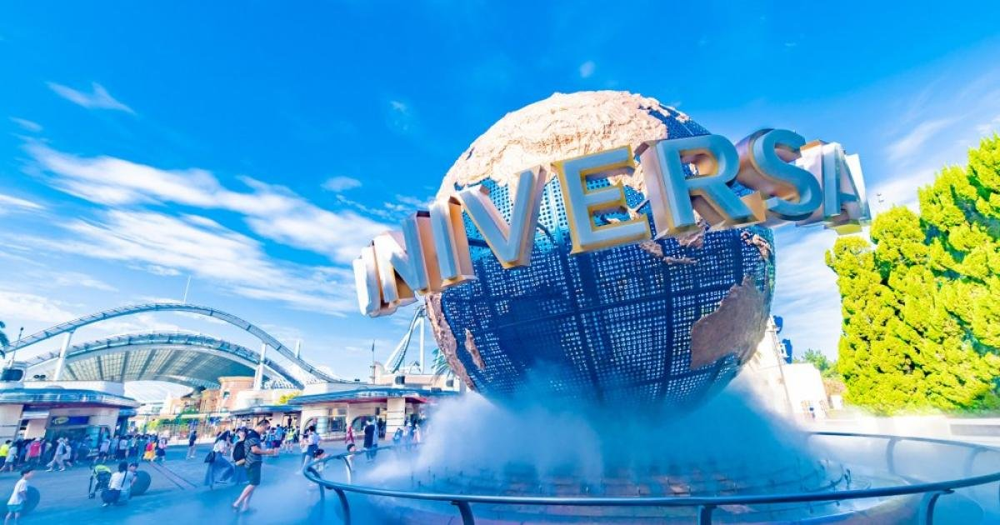
About the Park
Universal Studios Japan opened in March 2001 in Osaka, Japan. It was the first Universal Studios theme park built outside the United States. The park was created to bring the excitement of movies and entertainment into a real-life experience where visitors can become part of different worlds.
Since it first opened, USJ has continued to add new attractions and themed areas. The park now includes areas based on movies, games, and popular characters. It has become one of the well-known tourist attractions in Osaka and is visited by people from Japan and many other countries.
Popular Attractions
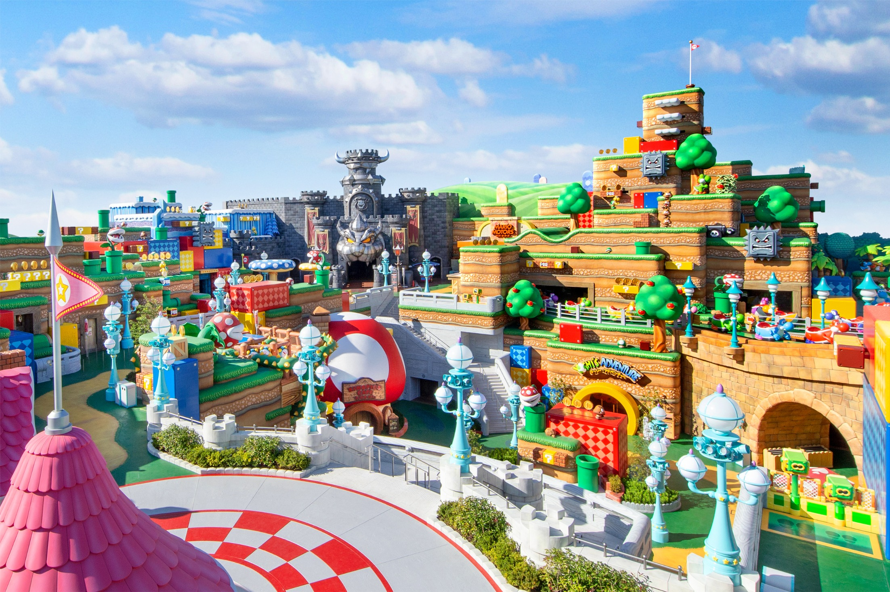
Super Nintendo World
A vibrant, multi-level masterpiece that acts as a real-life, playable video game. Guests use interactive Power-Up Bands to punch Question Blocks, explore Bowser’s Castle, ride Mario Kart: Koopa's Challenge, and plunge into the Donkey Kong Country expansion.
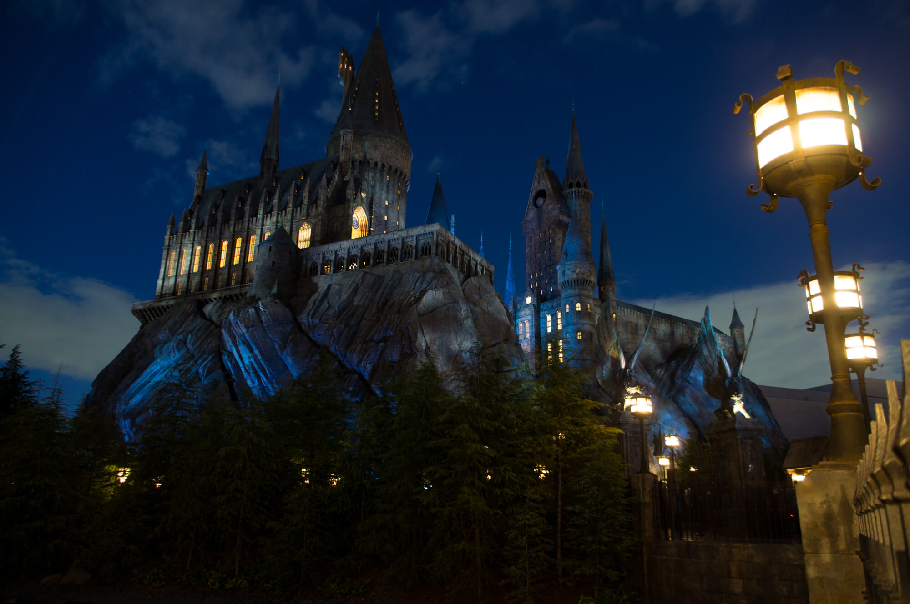
Wizarding World of Harry Potter
A highly detailed recreation of the magical universe, featuring the snow-capped roofs of Hogsmeade village and the towering Hogwarts Castle. It is home to the signature Harry Potter and the Forbidden Journey f light simulator and interactive wand stations.

Minion Park
The world's largest area dedicated to the Despicable Me franchise, f illed with chaotic energy, pastel-colored storefronts, and the hyper-kinetic Despicable Me Minion Mayhem simulator ride.
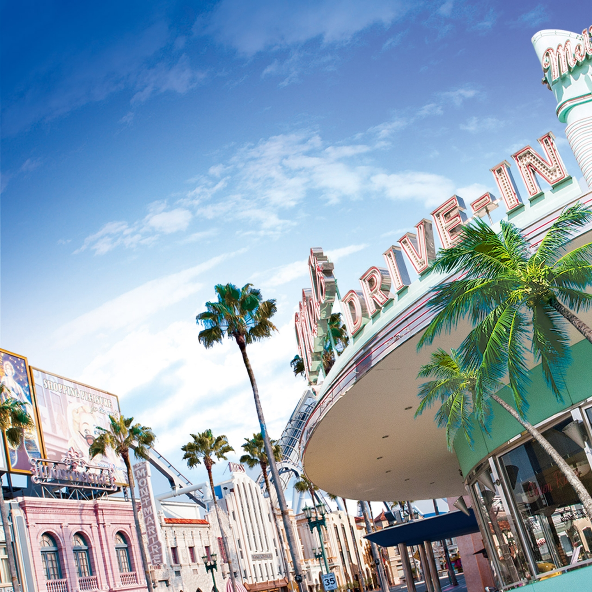
Hollywood
Located directly at the park entrance, this zone immerses you in the glamorous Golden Age of American cinema with California palm trees, art deco architecture, and star-studded walk ways. It functions as the park's main hub for shopping, dining, and live street entertainment.
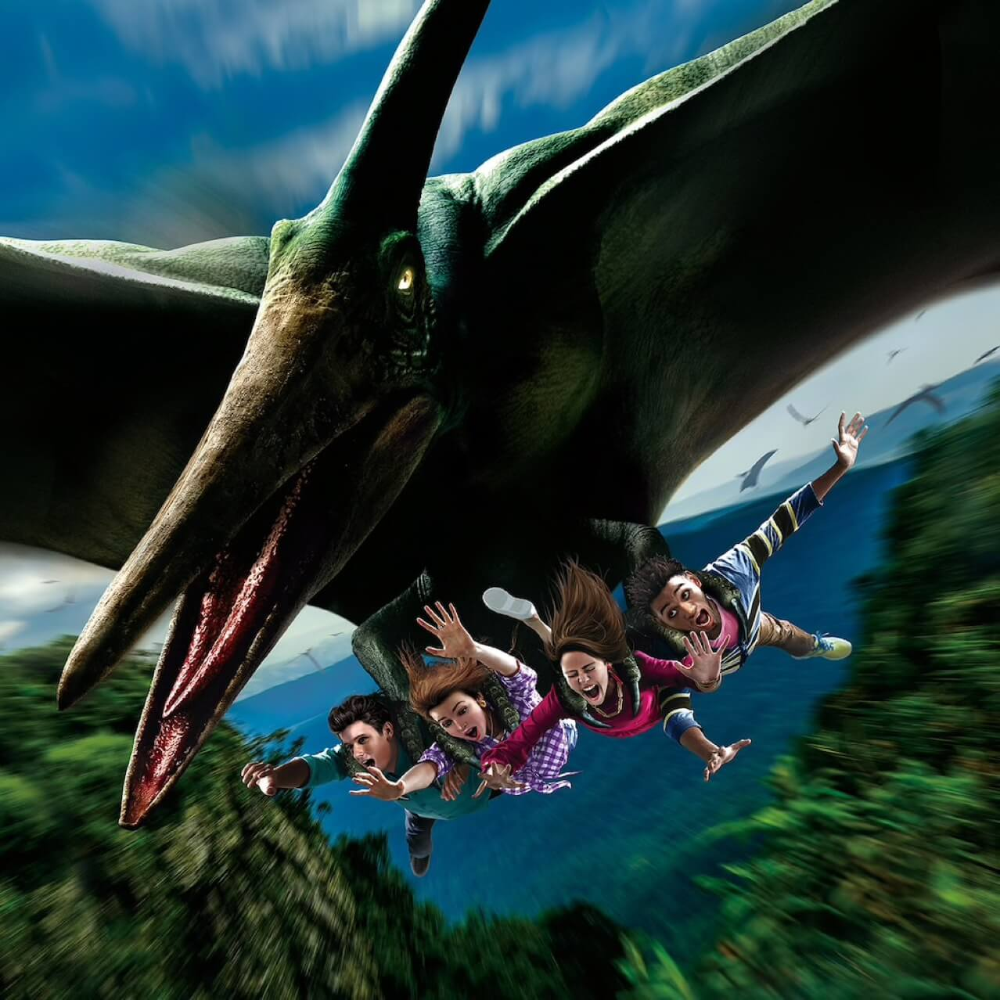
Jurassic Park
This zone drops you straight into a dense, prehistoric tropical jungle where genetically engineered dinosaurs roam. It completely replicates the look and tension of Steven Spielberg's legendary sci-fi franchise.
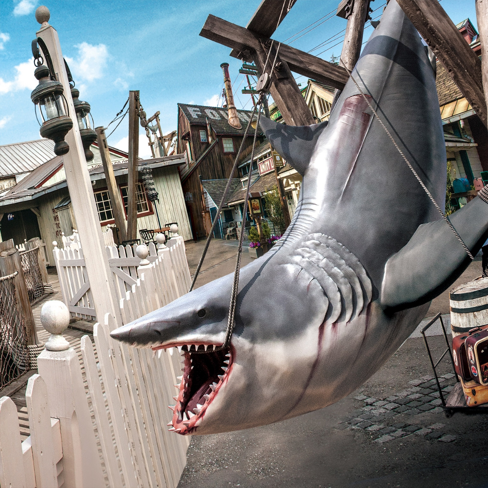
Amity Village
Based on the classic 1975 thriller Jaws, this zone is a beautifully crafted replica of a quaint, coastal New England harbor town that is terrorized by a giant great white shark.
Restaurants
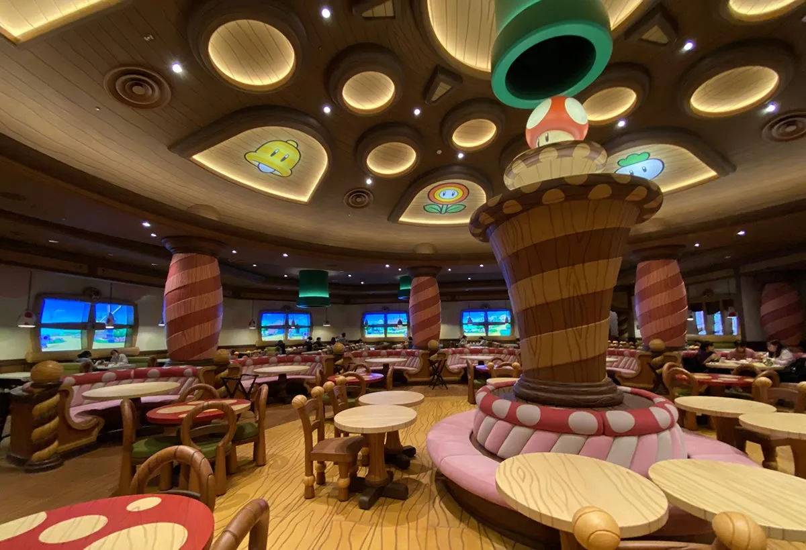
Kinopio's Cafe
Kinopio’s Cafe in Super Nintendo World welcomes you inside a giant mushroom where Chef Toad crafts playful, Instagram-worthy plates like the Mario Burger, Super Mushroom Pizza Bowl, and Question Block tiramisu.
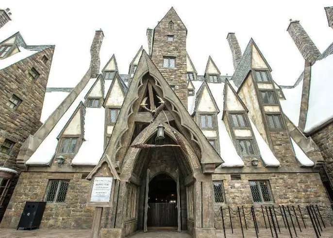
Three Broomsticks
Over in The Wizarding World of Harry Potter, the Three Broomsticks serves up a cozy, immersive British tavern atmosphere with hearty pub food like roast chicken, spare ribs, and iconic, sweet Butterbeer.
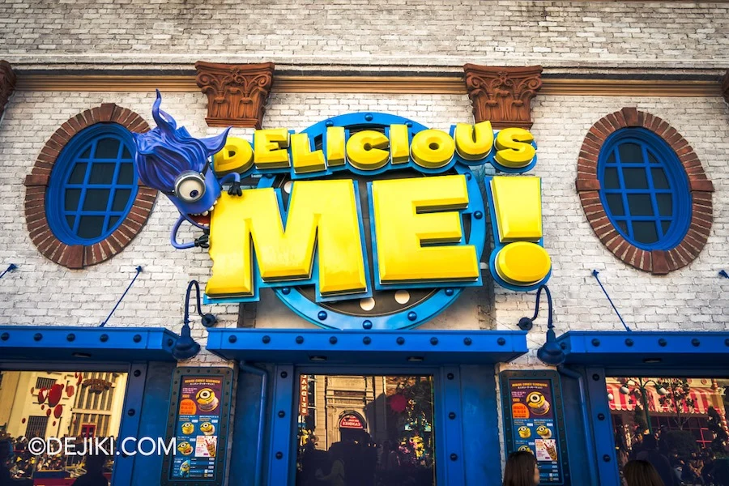
Delicious Me
Delicious Me! The Cookie Kitchen at Minion Park is a colorful, quick-service walk-up window where you can grab incredibly fun, Minion-shaped treats, including their popular banana ice cream cookie sandwiches and seasonal sweets.
Snacks
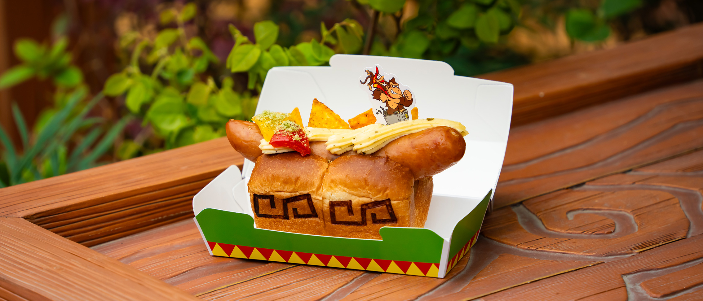
Nintendo World
DK Wild Hot Dog — Avocado & Cheese Sauce
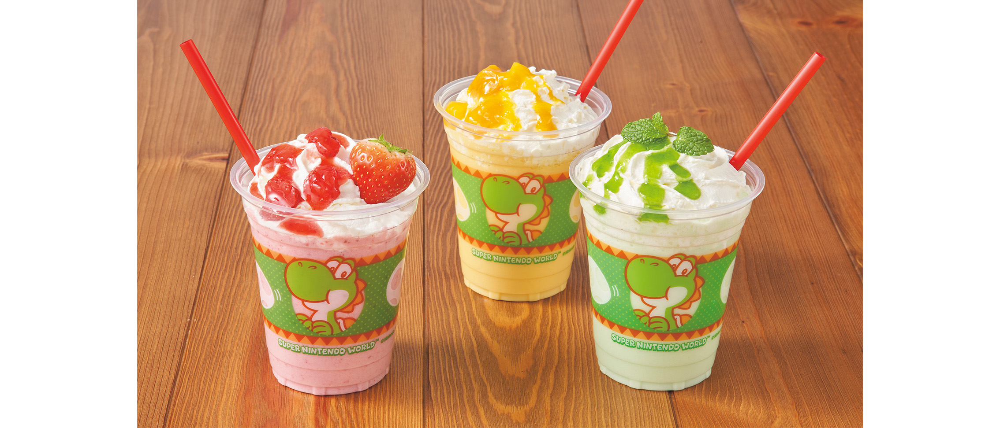
Nintendo World
Yoshi's Skills
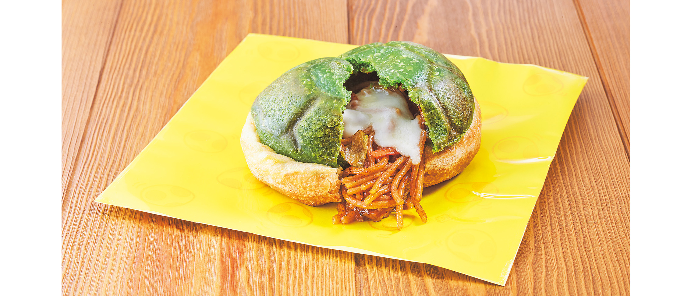
Nintendo World
Green Shell Calzone Filled with Yakisoba & Cheese
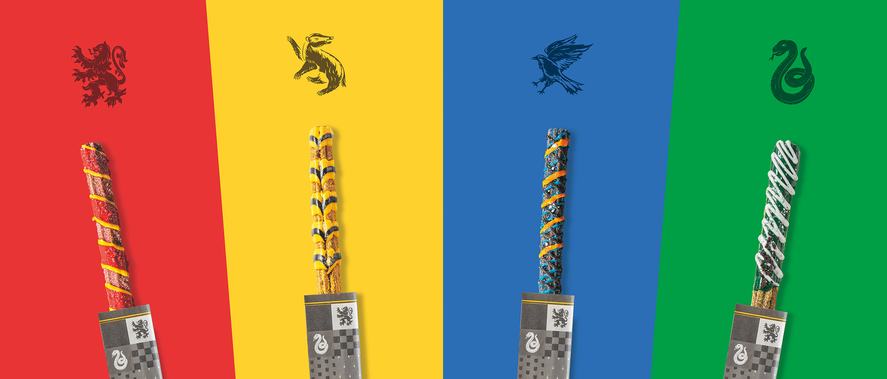
Harry Potter area
Gryffindor, Hufflepuff, Ravenclaw, Slytherin Churritos
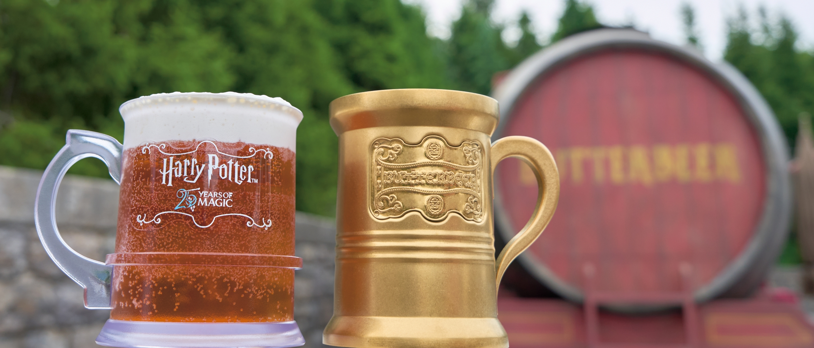
Harry Potter area
Butterbeer
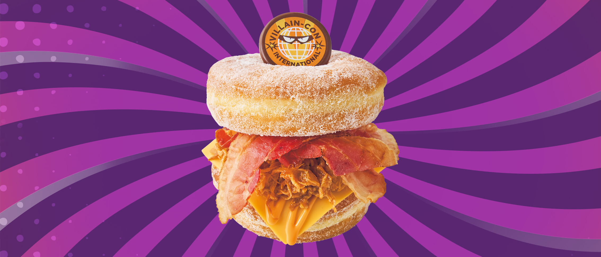
Minion Park
Villain-Con Donut Burger — BBQ Pork & Bacon
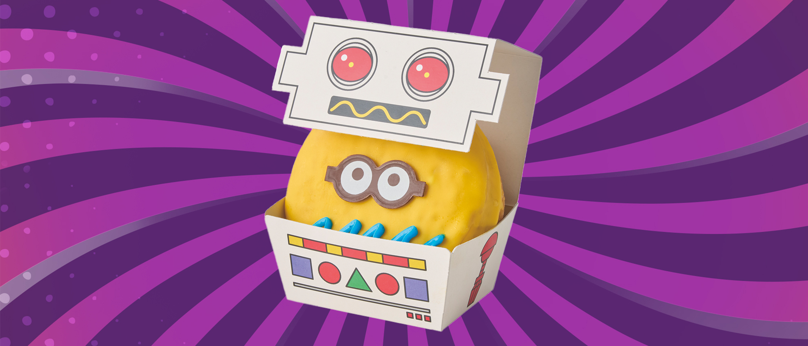
Minion Park
Minion Donut — Banana Cream
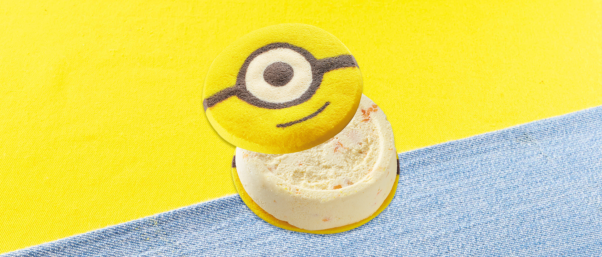
Minion Park
Minion Cookie Sandwich Banana Ice Cream & Fruits